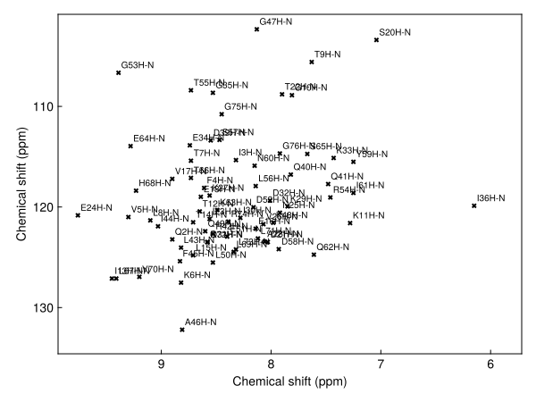
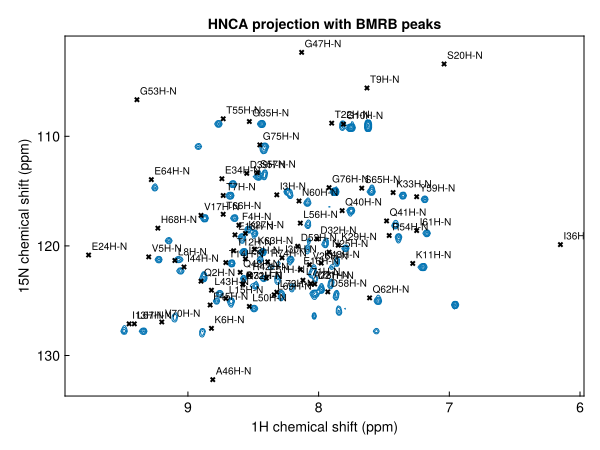
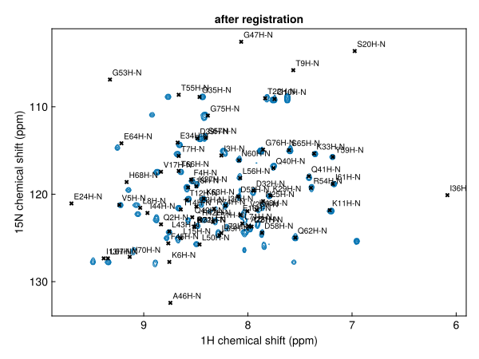
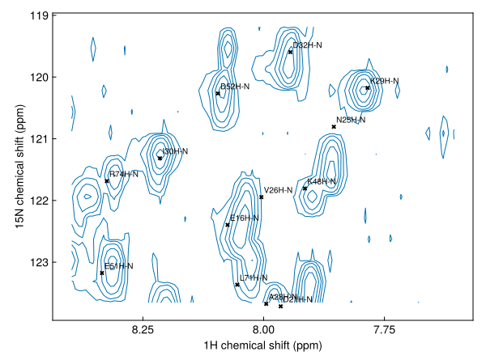
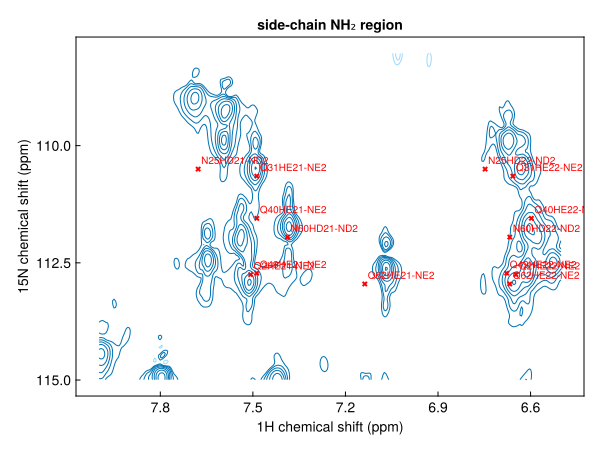
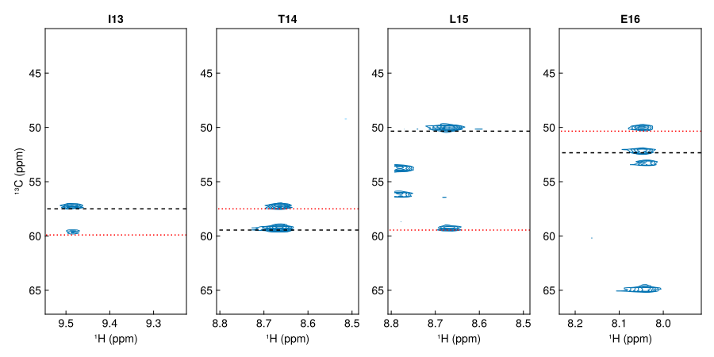
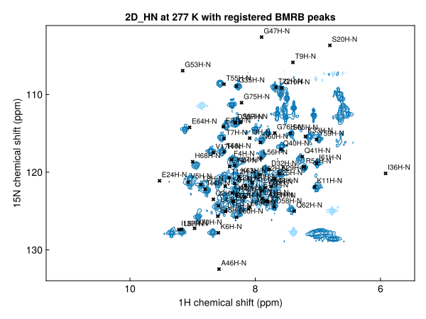

Assigning ubiquitin from the BMRB
The BMRB holds assigned chemical shifts for thousands of proteins. When your protein has an entry, the shifts predict where each residue's peak should appear in any correlation experiment. This tutorial uses the shifts of ubiquitin (BMRB entry 17769) to assign an HNCA spectrum of ubiquitin: predict the ¹H,¹⁵N peaks, register them onto the spectrum, and check the assignments in the HNCA's ¹³C dimension.
using NMRTools, CairoMakieThe shifts
loadbmrb downloads the shifts of a BMRB entry, given its number:
shifts = loadbmrb(17769)The shifts of entry 17769 come with NMRTools as example data, so this page runs without network access:
shifts = exampledata("BMRB_ubiquitin")
shifts[1:5]5-element Vector{ChemicalShift}:
ChemicalShift(M1HA, 4.23)
ChemicalShift(M1HB2, 2.136)
ChemicalShift(M1HB3, 2.08)
ChemicalShift(M1HG2, 2.493)
ChemicalShift(M1HG3, 2.02)Each ChemicalShift records the residue number and name, the atom, its nucleus and the shift in ppm. The entry has 1001 shifts:
length(shifts), shifts[1].residuename, shifts[1].atom, shifts[1].shift(1001, "MET", "HA", 4.23)Predicting the peaks
peaklist assembles shifts into the peaks of an experiment. The arguments name the atoms correlated in each dimension, in spectrum order with the direct dimension first. For the backbone amide peaks of an ¹H,¹⁵N HSQC:
predicted = peaklist(shifts, "H", "N")
predicted[1:3]3-element Vector{Peak{2}}:
label x (ppm) y (ppm) lwx (Hz) lwy (Hz) intensity
Q2H-N 8.9 123.22 NA NA NA
I3H-N 8.32 115.34 NA NA NA
F4H-N 8.61 118.11 NA NA NAThe labels give the residue and atoms. Plotted on their own, the predicted peaks are a simulated HSQC:
fig, ax, _ = nmrplot(predicted)
Comparing with a spectrum
The HNCA was recorded at 298 K, the temperature of the BMRB entry. Its ¹H,¹⁵N projection, the maximum over the ¹³C dimension, looks like an HSQC:
hnca = exampledata("3D_HNCA")
hn_proj = dropdims(maximum(hnca; dims=F3Dim); dims=F3Dim) / 3
fig, ax, _ = nmrplot(hn_proj; title="HNCA projection with BMRB peaks")
nmrplot!(ax, predicted)
Contour levels are set from the noise level of the 3D spectrum, which the projection keeps in its metadata. Taking the maximum over the ¹³C dimension raises the noise floor above that level, so the projection is divided by 3 to keep the lowest contours above the noise.
The predicted peaks sit close to the observed ones, but are systematically offset: the BMRB shifts were referenced under the deposited sample conditions, not ours. A few residues, such as G47 and A46, lie outside the spectral window of the ¹⁵N dimension.
Registering the prediction
register finds the single offset that best matches a peak list to a spectrum, and returns the list moved by it (register! moves the list in place):
registered = register(predicted, hn_proj)
fig, ax, _ = nmrplot(hn_proj; title="after registration")
nmrplot!(ax, registered)[ Info: Peak list shifted by -0.0656041, 0.229641 ppm
The offset applied is logged. Only a uniform shift is applied: individual peaks are not moved, so the predicted positions keep their relative pattern.
Reading off assignments
The registered list is now a set of assignments for the spectrum. Zooming in on a crowded region shows which residue each peak belongs to (left). findpeak snaps each predicted peak onto the nearest maximum in the spectrum, keeping its label, to give the observed positions (right):
region(p) = 7.6 < ppm(p, 1) < 8.4 && 119 < ppm(p, 2) < 124
observed = [findpeak(hn_proj, ppm(p); label=label(p)) for p in filter(region, registered)]
fig = Figure(size=(1000, 450))
ax1 = nmrplot(fig[1, 1], hn_proj[7.6 .. 8.4, 119 .. 124]; title="registered prediction").axis
nmrplot!(ax1, filter(region, registered))
ax2 = nmrplot(fig[1, 2], hn_proj[7.6 .. 8.4, 119 .. 124]; title="observed positions").axis
nmrplot!(ax2, observed)
observed[1:3]3-element Vector{Peak{2}}:
label x (ppm) y (ppm) lwx (Hz) lwy (Hz) intensity
E16H-N 8.0494 122.557 22.9772 42.084 63353.7
D21H-N 7.97892 123.978 18.0354 28.3701 135926.0
N25H-N 7.85964 121.522 19.5319 38.6144 55937.0Side chains
Atom names select specific atoms: "H", "N" gives only backbone amides. Passing nuclei instead gives every directly bonded N–H pair, which is what an HSQC shows, including the side-chain NH₂ groups of Asn and Gln and the side-chain NH of Arg and Trp. Side chains do not appear in the HNCA, so we compare with the ¹H,¹⁵N spectrum 2D_HN instead:
allnh = peaklist(shifts, H1, N15)
sidechains = filter(p -> !(p in predicted), allnh)
length(predicted), length(allnh)(72, 88)nh2(p) = 6.4 < ppm(p, 1) < 7.9 && 108.5 < ppm(p, 2) < 114.5
hsqc = exampledata("2D_HN")
fig, ax, _ = nmrplot(hsqc[6.4 .. 7.9, 108.5 .. 114.5]; title="side-chain NH₂ region")
nmrplot!(ax, filter(nh2, register(sidechains, hsqc)); color=:red)[ Info: Peak list shifted by -0.142633, 0.800875 ppm
Checking assignments in the HNCA
An HNCA correlates each amide with the Cα of its own residue ("CA") and of the preceding residue ("CA-1"). Predicting both and registering them onto the 3D spectrum gives the expected Cα shifts for each amide:
ca = register(peaklist(shifts, "H", "N", "CA"), hnca)
caprev = register(peaklist(shifts, "H", "N", "CA-1"), hnca)
ca[1:2]2-element Vector{Peak{3}}:
label x (ppm) y (ppm) z (ppm) lwx (Hz) lwy (Hz) lwz (Hz) intensity
Q2H-N-CA 8.83531 123.463 52.5948 NA NA NA NA
I3H-N-CA 8.25531 115.583 57.0848 NA NA NA NAA strip is a narrow ¹H range of the HNCA at one amide's ¹⁵N shift. Plotting strips for consecutive residues, with the predicted Cα shifts marked, shows the sequential walk: each residue's Cα(i−1) peak lines up with the Cα(i) peak of the strip before it.
pick(list, res) = only(filter(p -> startswith(label(p), res * "H-"), list))
residues = ["I13", "T14", "L15", "E16"]
fig = Figure(size=(900, 450))
for (i, res) in enumerate(residues)
p, q = pick(ca, res), pick(caprev, res)
h, n = ppm(p, 1), ppm(p, 2)
strip = hnca[(h - 0.15) .. (h + 0.15), Near(n), :]
ax = nmrplot(fig[1, i], strip; title=res, xlabel="¹H (ppm)",
ylabel=i == 1 ? "¹³C (ppm)" : "").axis
hlines!(ax, [ppm(p, 3)]; color=:black, linestyle=:dash)
hlines!(ax, [ppm(q, 3)]; color=:red, linestyle=:dot)
end┌ Warning: Assignment to `ax` in soft scope is ambiguous because a global variable by the same name exists: `ax` will be treated as a new local. Disambiguate by using `local ax` to suppress this warning or `global ax` to assign to the existing global variable.
└ @ bmrb.md:167
Dashed black lines mark the predicted Cα(i), dotted red lines Cα(i−1).
A spectrum at a different temperature
The ¹H,¹⁵N spectrum 2D_HN was recorded at 277 K, 21 K below the BMRB entry. Amide shifts change with temperature by different amounts for each residue, so a uniform offset cannot match every peak:
cold = exampledata("2D_HN")
cold[:temperature]276.9988moved = register(predicted, cold)
fig, ax, _ = nmrplot(cold; title="2D_HN at 277 K with registered BMRB peaks")
nmrplot!(ax, moved)[ Info: Peak list shifted by -0.231381, 0.278222 ppm
Most peaks are close enough to identify, but some need checking by hand or with a 3D experiment.
Saving the assignments
savepeaks writes the registered list as a peaklist.csv, the starting point for an analysis in NMRAnalysis.jl:
savepeaks("ubiquitin-assigned.csv", registered)Next steps
- Peak lists from the BMRB: every way of writing a correlation, including CON, HNCO and methyl spectra
- Register a peak list onto a spectrum